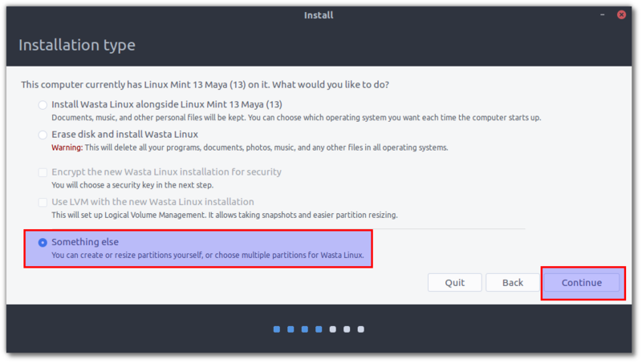
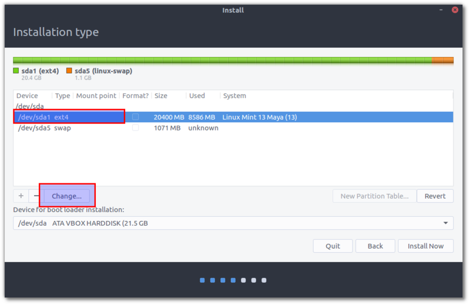
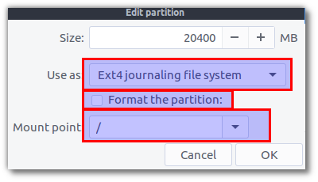
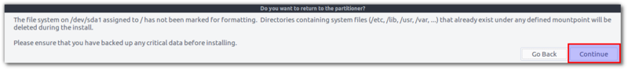
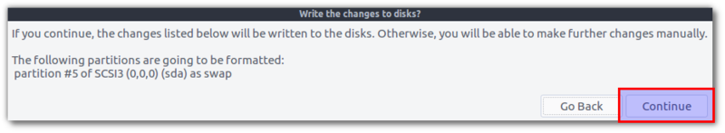

Inplace Upgrades: Migrating between major versions of Wasta-Linux
This guide is for migrating between major versions of Wasta-Linux (eg. from 16.04 to 18.04) when the machine does not have a separate home partition. Even without a separate home partition, this type of upgrade will not remove a user’s home directory and all files and settings from this ‘home’ will be migrated to the new system.
Backup
Make sure important personal files are backed up in case something goes awry.
Get UIDs
Get a listing of the users and UIDs (user IDs) from the existing system. We need it to match with the new installation or security problems will exist after you re-install and you many not be able to login to your new system. Get the list this way:
Terminal * command:
sudo grep "/home" /etc/passwd
You will get output something like this:
syslog:x:104:109::/home/syslog:/bin/false rik:x:1000:1000:rik,,,:/home/rik:/bin/bash etbadmin:x:1001:1001:etbadmin,,,:/home/etbadmin:/bin/bash test:x:1002:1002:test,,,:/home/test:/bin/bashSo for me that means that user “rik” is UID 1000, user “etbadmin” is UID 1001, and user “test” is UID 1002. This is very important!! When you install, the UID created by the installer is ALWAYS 1000. So I would install using “rik” so it gets assigned UID 1000. After the install, I would first create user “etbadmin” so that it will get assigned UID 1001, and then create user “test” so that it will get assigned UID 1002. If you get this mixed up we can fix it later, but it is easier to do it in the right order so that everything matches.
Install: Choose “Something else”
Create a USB installer as normal. Proceed as normal using the USB installer, making sure to choose “SOMETHING ELSE” at the “Installation type” screen. You have your files backed up, right? :-)

Select Partition
In the “Something Else” section, you want to choose the main partition and click the “Change” box:

Set Partition Properties
Then choose “ext4” for the type, and choose “/”. Make sure an NOT SELECT to format it (or you will wipe the data). It will warn you that it will NOT replace data in “non system folders”…. basically this is telling us your home won’t be wiped out so this is very important.

Continue WITHOUT Formatting Partition
Click “OK” and you will get back to the “Something Else” list where you will see your partition is now listed as “/”. Again make sure to NOT CHECK THE BOX next to format. Finally you can click Install Now.
You will get the following messages just informing you that it will ONLY delete data from the ‘system folders’ (meaning your HOME will not be deleted). The second message just indicates that the “swap” (for “virtual RAM”) partition will be formatted. Click “Continue” to both messages.


Proceed with install as normal
Restart and login to the new system after the installation completes.
Note: You will likely receive a message saying there was an error restoring previously installed applications. This should not prevent your upgraded system from being able to run, so you can just click “OK” to proceed as normal. After starting your new system, you may need to install any applications that you previously had installed that are not default applications in the newer Wasta-Linux version.
Run Wasta-Reset
Running Wasta-Reset makes sure all the default user settings are applied so the user will have the standard interface experience from the new system.
Create Additional Users
Proceed creating additional users in the correct order (refer to step 2 above to make sure of the correct order: the user created from the installer is assigned
UID 1001, the first additional user created will be assignedUID 1001, etc.)Again Wasta-Reset should be run after logging in for the first time to ensure that the user will have the standard user interface experience.